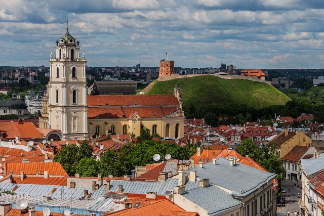
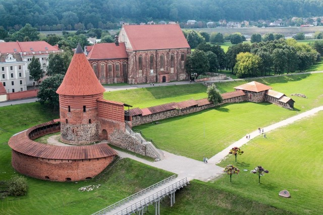
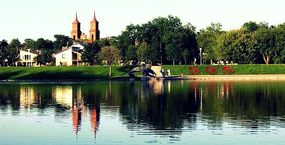
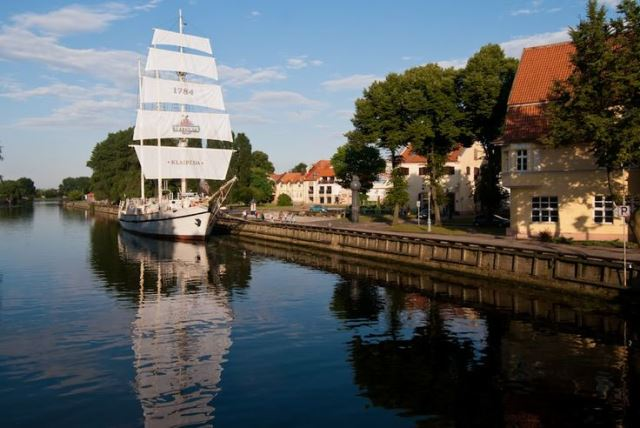
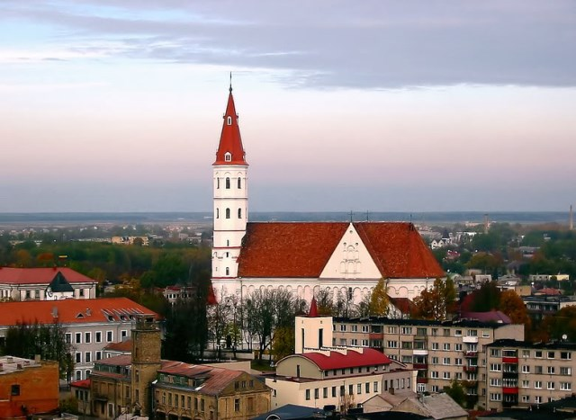

Vilnius
Vilnius – Lietuvos sostinė ir didžiausias šalies miestas, Vilniaus apskrities, rajono ir miesto savivaldybės centras. Įsikūręs šalies pietryčiuose, Neries ir Vilnios santakos. Vilnius yra arkivyskupijos centras, nuo 1579 m. – universitetinis miestas. Sostinėje veikia aukščiausios valdžios institucijos – Prezidentūra, Seimas, Vyriausybė, ministerijos, Aukščiausiasis ir Konstitucinis teismai, užsienio valstybių ambasados ir atstovybės, diplomatinės misijos, tarptautinių organizacijų atstovybės. Vilniaus senamiestis 1994 m. yra įtrauktas į UNESCO Pasaulio paveldo sąrašą.s
Kaunas
Kaunas – antrasis pagal dydį Lietuvos miestas šalies centrinėje dalyje, Nemuno ir Neries santakoje. Svarbus pramonės, transporto, mokslo ir kultūros centras, Laikinoji sostinė. Kauno miesto savivaldybės, Kauno rajono savivaldybės, arkivyskupijos centras. Gyventojų skaičius (2019 m. sausio 1 d.) – 286,7 tūkst.[1]
Panevėžys
Panevėžys – miestas šiaurės Lietuvoje, Vidurio Lietuvos žemumoje, abipus Nevėžio, 136 km į šiaurės vakarus nuo Vilniaus. Vienas didžiųjų Lietuvos miestų (penktasis pagal dydį). Panevėžys yra apskrities ir Panevėžio rajono savivaldybės centras, Panevėžio miesto savivaldybė, taip pat Panevėžio ir Velžio seniūnijos centras, Panevėžio vyskupija. Yra įvairių tikėjimų bažnyčių, cerkvių, 7 pašto skyriai (centrinis LT-35001). Galinė Aukštaitijos siaurojo geležinkelio Panevėžys – Anykščiai stotis. Svarbus pramonės ir kultūros centras. Dešiniajame Nevėžio krante yra Panevėžio senamiestis, kairiajame – Naujamiestis, dabartinis miesto centras. Miesto gimtadienis (miesto diena) švenčiama rugsėjo 7 d.
Klaipeda
Klaipėda – trečias pagal gyventojų skaičių ir plotą Lietuvos miestas, įsikūręs Vakarų Lietuvoje, Pajūrio žemumoje, ties Kuršių marių ir Baltijos jūros santakos vieta. Klaipėdos apskrities administracinis centras. Svarbiausias Vakarų Lietuvos pramonės centras[2] bei kelių, geležinkelių ir jūrų transporto mazgas. Sąsiauryje šalia miesto, prie Dangės upės žiočių, įsikūręs neužšąlantis ir vienas didžiausių pagal krovinių apyvartą Baltijos jūros regione jūrų uostas. 2019 m. pab. sudarytame savivaldybių gerovės indekso reitinge Klaipėdos miestui teko trečia vieta.[3] Miesto pradžia buvo 1252 m. senosios kuršių gyvenvietės vietoje pastatyta Livonijos ordino pilis, prie kurios įsikūrė miestas. Vėliau jis priklausė Vokiečių ordinui, Prūsijos kunigaikštystei, Prūsijos karalystei ir Vokietijos imperijai. Po Pirmojo pasaulinio karo pagal Versalio taikos sutartį Klaipėda ir Klaipėdos kraštas buvo atskirtas nuo Vokietijos ir po 1923 m. įvykdyto Klaipėdos sukilimo prijungtas prie Lietuvos. 1939 m. po vokiečių paskelbto ultimatumo Klaipėda vėl okupuota Vokietijos. 1945 m. miestas su Klaipėdos kraštu okupuotas Sovietų Sąjungos ir prijungtas prie Lietuvos TSR. Yra keletas muziejų (žymiausias – Lietuvos jūrų muziejus), veikia Klaipėdos dramos ir muzikinis teatrai. Žymiausi renginiai – Jūros šventė ir Pilies džiazo festivalis, kasmet pritraukiantys daug miesto svečių. Iš miesto nesunku pasiekti populiarius pajūrio kurortus, pietuose esančią Nidą ar šiaurėje įsikūrusią Palangą.
Šiauliai
Šiauliai – miestas šiaurės Lietuvoje, ketvirtasis pagal gyventojų skaičių šalies miestas; Šiaulių apskrities ir Šiaulių rajono savivaldybės administracinis centras. Šiauliai yra svarbus ekonominis ir susisiekimo centras, jame veikia Šiaulių universitetas, miestas yra katalikiškos vyskupystės centras.